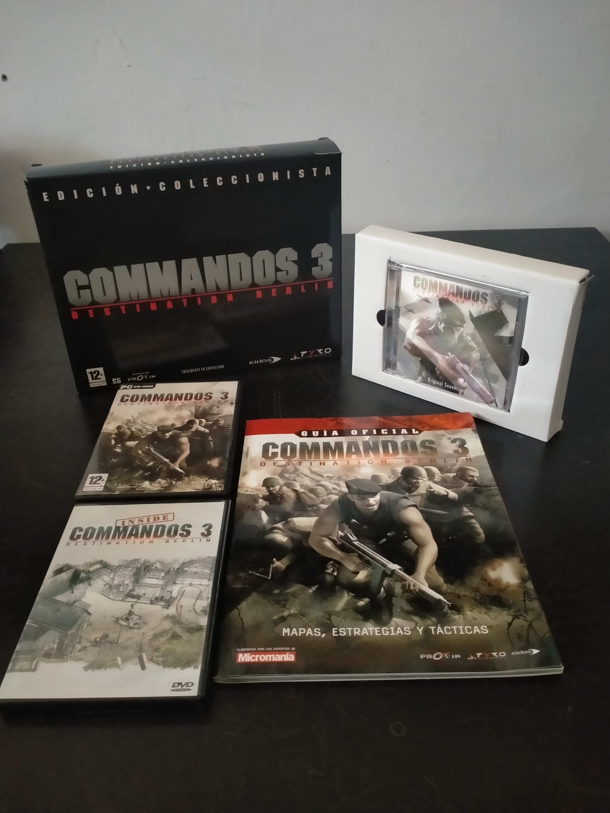

Ficha #000000
Commandos 3: Destination Berlin - Edición Coleccionista
Commandos 3: Destination Berlin es la tercera entrega principal de la saga de táctica en tiempo real creada por el estudio español Pyro Studios y publicada en 2003. Mantiene la fórmula basada en coordinar un pequeño grupo de especialistas aliados tras las líneas enemigas, combinando infiltración, sigilo, combate y resolución táctica de objetivos durante la Segunda Guerra Mundial. La campaña recorre escenarios vinculados a Stalingrado, Europa Central y Normandía, utilizando una evolución del motor isométrico de Commandos 2 con interiores detallados, situaciones más dinámicas y un ritmo de acción más intenso. Esta edición española «Edición Coleccionista», distribuida por Proein y presentada completamente en castellano, amplía notablemente el valor documental del lanzamiento al reunir el juego con banda sonora, guía oficial, material audiovisual y una camiseta promocional, constituyendo una edición especialmente relevante para el coleccionismo y la preservación del videojuego español de comienzos de los años 2000.
- Formato
- Big Box
- Plataforma
- Win98 WinMe Win2000 WinXP
- Género
- Táctica en tiempo real Estrategia en tiempo real Sigilo Estrategia bélica
- Serie
- Todos Big Box
- Desarrollador
- Pyro Studios
- Distribuidor
- Eidos Interactive, Proein
- EAN
- —
Contenido de la edición
- Caja exterior Big Box Edición Coleccionista
- Commandos 3: Destination Berlin para PC CD-ROM en estuche DVD Case
- Banda sonora original con 24 temas
- Camiseta Commandos 3
- Guía oficial del juego
- DVD Inside Commandos 3
Preservación
- Protección
- No determinado
- Formato recomendado
- BIN/CUE
- Jugable en virtualización
- Sí
No se dispone de evidencia suficiente para identificar con rigor el sistema anticopia de esta edición concreta. Para preservación se recomienda crear imágenes BIN/CUE de los soportes CD-ROM del juego y verificar sus hashes; la banda sonora debe conservarse además mediante extracción sin pérdida con CUE y el DVD adicional mediante una imagen ISO independiente. La ejecución es viable en una máquina virtual con una versión compatible de Windows, sujeta a la compatibilidad del sistema de protección que se determine posteriormente.